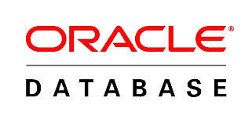
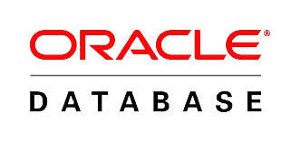

Programador de aplicaciones multiplataforma para Android, maquetador y programador web.
Soy una persona abierta, tengo sentido de la responsabilidad, capacidad de adaptación y me encanta la sensación del
trabajo bien hecho. Siempre busco la manera de ampliar mis conocimientos para dar la mejor versión de mí mismo tanto
en lo personal como en lo profesional. Si me tuviese que describir en tres palabras serían fiel, honesto y empático.
Ignos, Estudio de Ingeniería (Oficina de Arte Consultores) - Las Palmas de G.C.
Mi trabajo consiste en resolver tareas de configuración, actuaciones en bases de datos, atención a usuarios, entre otras, por medio de JIRA o petición directa de los coordinadores o la jefa del proyecto. Por lo que es necesario ser organizado, trabajar en equipo, ser comunicativo, ser analítico y estar en continuo aprendizaje. Los detalles del proyecto están más adelante.
Duración: Abril 2018 - Actualidad
Conversiona, Agencia de publicidad - Ingenio.
Desarrollador de front-end donde mis tareas incluyeron un “mapa web” con Adobe DreamWeaver, edición de imágenes con Adobe PhotoShop, configuraciones de PrestaShop 1.7 (módulos y header de una página web) y maquetación con HTML, CSS, Javascript, JQuery y Responsive Design.
Duración: Octubre - Octubre 2017 (menos de un mes)
Mundiaudit S.L, Asesor fiscal - Tafira Alta.
Durante todo el periodo de prácticas vi la metodología de trabajo que llevaban y la importancia del análisis antes de escribir código. Mejoré mucho la organización, el análisis y la resolución de problemas, así como la programación a través de .Net (C#) con máquinas de estado, seguridad, encriptación y otros conceptos en programación back-end.
Duración: Abril - Mayo 2017 (2 meses)
Abaco System, Tienda de informática - Carrizal.
Formé equipo junto a un programador autónomo que colaboraba con la empresa para realizar su nueva página web. Mi tarea principal fue la de encargarme del front-end con .Net (C#). Del mismo modo, durante esta etapa, amplié de manera autodidacta mis conocimientos de CSS, Bootstrap, Uikit y Responsive Design, lo que me permitió desempeñar mi trabajo con mayor soltura y aprovechar al máximo esta oportunidad.
Duración: Abril - Mayo 2016 (2 meses)
Bachillerato de Ciencias Tecnológicas
(2010-2013)
[I.E.S. Jinámar]
Ciclo Superior de Desarrollo de Aplicaciones Web
(2014-2016)
[I.E.S. El Rincón]
Ciclo Superior de Desarrollo de Aplicaciones Multiplataformas
(2016-2017)
[I.E.S. El Rincón]
Certificados de cursos en Udemy:


Arte Consultores Tecnológicos S.L junto a Ignos Estudio de Ingeniería S.L ganaron un concurso como UTE(Unión Temporal de Empresas) para llevar a cabo el proyecto SISPECAN. Este proyecto requiere del mantenimiento y mejora de las aplicaciones informáticas del Servicio Canario de Empleo, así como dar un servicio de soporte, entre otras tareas. Mi trabajo desde el área de soporte abarca tareas de NIVEL1, como llamamos, de todas las áreas del proyecto. Uso programas ofimáticos, diferentes gestores de bases de datos para los diferentes casos (DBeaver, MYSQL Workbench y SQLDeveloper) y manejo avanzado de JIRA.
Fecha: Abril de 2018 - Actualidad 

El juego Solitario tiene muchas variantes y este proyecto no pretende abarcar todas las posibilidades. Esta opción permite cambiar la dificultad, medir el tiempo que tardas en cada partida y es un juego realizado en Front-End. Es recomendable mirar las instrucciones, sobretodo si no estamos familiarizados con este tipo de juegos.
Fecha: Febrero de 2018Durante mi estancia en Conversiona (explicado anteriormente en Experiencia) trabajé en la página web de Centro Médico Tres Ramblas. Mis tareas fueron pasar la versión de laptop, que ya estaba acabada, a las versiones de tablet y móvil. Como la página web puede sufrir cambios pondré lo más destacable en la Galería, que son el slider de las aseguradoras y el menú lateral (El resto fue maquetar contenedores div y no lo veo relevante). Dicho slider lo hice con Slick aprendiendo su configuración y adaptándolo a nuestras necesidades.
Fecha: Octubre de 2017Durante el 2º curso de DAM (Desarrollo de Aplicaciones Multiplataformas) en el módulo de Programación multimedia y dispositivos móviles (principalmente android). Trabajé en una aplicación Android con la que gestionar nuestras series y saber que capítulos hemos visto.
Fecha: Marzo de 2017Durante el 2º curso de DAW (Desarrollo de Aplicaciones Multiplataformas) en el módulo de Desarrollo de Interfaces, le presenté al profesor un CRUD en Eclipse con Hibernate, patrón MVC y código limpio.
Fecha: Enero de 2017
Tal y como dije anteriormente en
Experiencia
me dediqué al front end de la nueva página web de la empresa, aunque por decisiones del jefe finalmente no se publicó y solo
puedo enseñar imágenes de la versión que yo tenía.
A partir de dicha plantilla, puse los colores de la empresa, el logo, ordené el contenido, relacioné la página con
Facebook, corregí detalles en los diferentes navegadores y finalmente, el apartado de
Contacto, que podemos ver en
Galería, lo hice por iniciativa propia con la aceptación posterior del jefe y en dicha galería, solo veremos
este apartado, al ser lo más relevante del project porque no se pudo acabar por causas ajenas a nuestra voluntad.
Usé Bootstrap y JQuery Validate para el formulario derecho.
Antes de empezar la FCT en el 2º curso de
DAW (Desarrollo de Aplicaciones Web) en el
módulo de Integración (dos semanas) una compañera y yo desarrollamos una página para el senderismo en Gran
Canaria con el asesoramiento de una estudiante de Turismo que ejercía de nuestra clienta. Por otro módulo del ciclo
ya habíamos investigado sobre Laravel y quisimos sacarle el mayor provecho a dicha tecnología.
Al estar limitados por el tiempo algunas partes se quedaron como Mockup (maqueta de la página) aunque la clienta quedó
satisfecha. Intentamos buscar algún hosting que fuese gratuito pero no encontramos ninguno que fuese compatible con
Laravel, de ahí el uso de la
"Galería".
Durante el 2º curso de
DAW (Desarrollo de Aplicaciones Web) en el módulo de Diseño de Interfaces Web, en un grupo de 4 personas rediseñamos
la página de nuestro instituto (IES El Rincón) hasta llegar a un
Mockup (maqueta de la página).
Repartimos el trabajo, desde casa lo unimos con Git y como íbamos bien de tiempo hicimos Pair Programming (una persona
escribe código y el resto analiza, opina y revisa) para aprovechar las horas que nos quedaban en clase hasta el día
de la presentación. Finalmente, como ampliación hicimos el mapa del sitio (footer), "las migas de pan" y la galería
funcional (nuestro centro -> galería).
Durante el 2º curso de
DAW (Desarrollo de Aplicaciones Web) en el módulo de Desarrollo Web en Entorno Cliente (principalmente programación
javascript). He elegido los trabajos donde invertí más tiempo del necesario.
Primero tenemos el clásico
piedra, papel y tijera donde nuestro rival es la CPU, tiene responsive design y una interfaz divertida.
En segundo y último lugar, una
moneda donde puede salir cara o cruz, registra los resultados, tiene responsive design y un fondo animado.